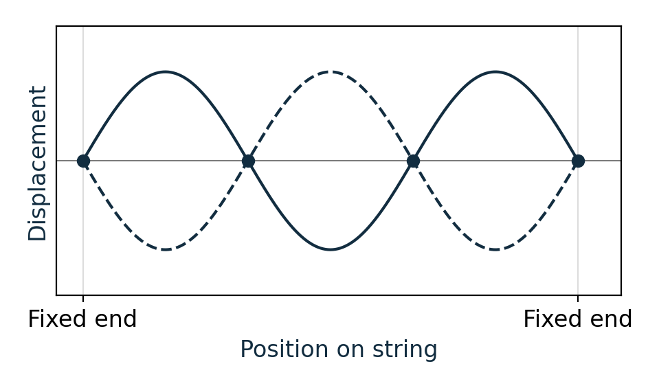
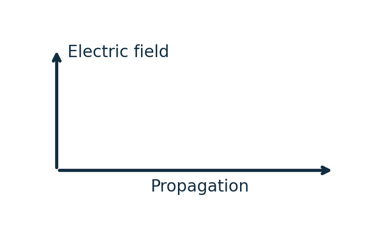
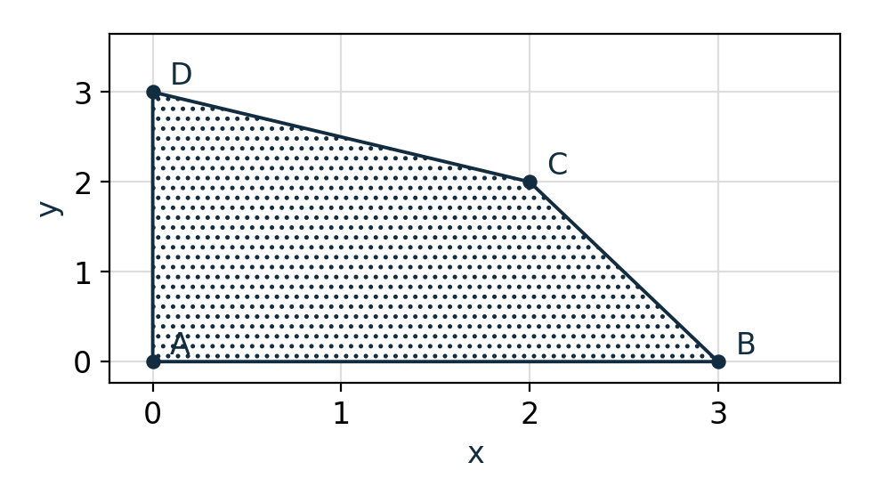
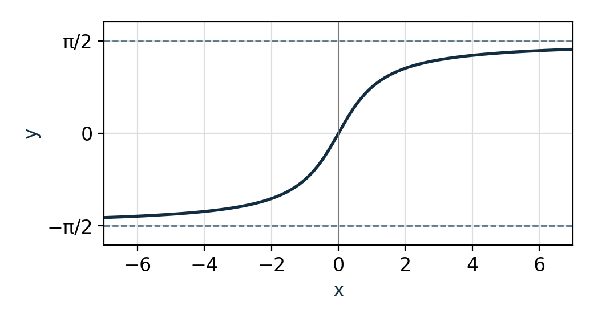

COMEDK UGET Test 14
180 minutes · 180 questions · +1 per correct answer · No negative marking
Physics
Q001. Three equally spaced parallel wires carry currents I, I and 2I from left to right. The left and middle currents point up; the right current points down. What is the net magnetic force on the middle wire?
A) Right, equal to its attraction to the left wire
B) Zero
C) Left, three times its attraction to the left wire
D) Left, twice its attraction to the left wire
Worked solution
Answer: (C) Left, three times its attraction to the left wire
Why and working: Parallel currents attract and antiparallel currents repel. The two forces on the middle wire both point left; the right contribution is twice the left contribution.
Why not the others: (A) subtracts forces that act in the same direction. (B) ignores both current direction and unequal magnitudes. (D) omits the attraction toward the left wire.
Q002. A light horizontal beam is pinned at its left end and held by an upward vertical string at its right end, 3 m away. A 60 N load hangs 1 m from the pin. What upward reaction does the pin provide?
A) 20 N
B) 60 N
C) 80 N
D) 40 N
Worked solution
Answer: (D) 40 N
Why and working: Torque about the pin requires 3T=60×1, hence T=20 N. Vertical equilibrium then gives the pin reaction 60−20=40 N.
Why not the others: (A) is the string tension. (B) ignores the string’s contribution. (C) adds two forces that together support the load.
Q003. An ideal step-down transformer has a primary-to-secondary turns ratio of 5. A secondary load draws 2 A. What current does the primary draw?
A) 10 A
B) 0.4 A
C) 2 A
D) 0.08 A
Worked solution
Answer: (B) 0.4 A
Why and working: The secondary voltage is a fifth of the primary voltage. Equal input and output powers require I_p=I_s/5=0.4 A.
Why not the others: (A) inverts the current ratio. (C) assumes equal currents despite unequal voltages. (D) applies the turns ratio twice.
Q004. A contact pair has focal length +40 cm. Removing one lens leaves a diverging lens of focal length −20 cm. What is the focal length of the removed lens?
A) +20 cm
B) −40 cm
C) +60 cm
D) +13.3 cm approximately
Worked solution
Answer: (D) +13.3 cm approximately
Why and working: The pair has power +2.5 D and the remaining lens −5 D. The removed lens must supply +7.5 D, whose reciprocal is about 0.133 m.
Why not the others: (A) uses the magnitude of the remaining lens. (B) takes the opposite sign of the pair. (C) adds focal lengths instead of powers.
Q005. Two fixed sources produce potential +30 V at P and −10 V at Q. Identical −2 μC charges are placed one at each point in separate trials. What is U_P−U_Q?
A) +80 μJ
B) −40 μJ
C) −80 μJ
D) +40 μJ
Worked solution
Answer: (C) −80 μJ
Why and working: Subtract the potentials before multiplying by test charge: ΔU=(−2 μC)[30−(−10)] V=−80 μJ.
Why not the others: (A) ignores the negative test charge. (B) ignores the charge factor. (D) ignores its magnitude and sign.
Q006. An infinite insulating plane has uniform positive surface charge. How does its electric field magnitude compare at perpendicular distances d and 3d?
A) It is the same
B) It is nine times larger at d
C) It is three times larger at d
D) It vanishes at 3d
Worked solution
Answer: (A) It is the same
Why and working: Gauss’s law on a symmetric pillbox yields E=σ/(2ε₀), independent of distance for the infinite sheet.
Why not the others: (B) uses spherical spreading. (C) uses cylindrical spreading. (D) the ideal sheet has no such cutoff.
Q007. Two identical air-gap capacitors are connected in parallel to a battery. One gap is then completely filled with a dielectric of relative permittivity 4. Afterward, what fraction of the combined free charge on the two positive plates is on the filled capacitor?
A) 4/5
B) 1/5
C) 1/2
D) 3/4
Worked solution
Answer: (A) 4/5
Why and working: At the common battery voltage the filled capacitor has four times the free charge of the air-gap capacitor. Its share is therefore 4/(4+1).
Why not the others: (B) gives the unfilled capacitor’s share. (C) ignores the change in capacitance. (D) counts only the increase in the filled plate’s charge.
Q008. Two springs have constants k and 2k. They store the same elastic energy. How do their extension magnitudes compare, softer to stiffer?
A) 2
B) √2
C) 1/√2
D) 1
Worked solution
Answer: (B) √2
Why and working: Equal values of kx²/2 imply that the softer spring needs the larger extension by a factor √2.
Why not the others: (A) uses linear rather than quadratic extension scaling. (C) reverses the pair order. (D) equal extensions would give unequal energies.
Q009. Two branches between the same two nodes carry 1 A and 2 A toward the lower node. A third branch is a 3 Ω resistor carrying the return current to the upper node. What is the potential of the lower node relative to the upper one?
A) −9 V
B) +3 V
C) +6 V
D) +9 V
Worked solution
Answer: (D) +9 V
Why and working: Junction conservation gives 3 A upward in the return branch. The potential drops by 3×3=9 V in the upward current direction.
Why not the others: (A) takes the drop in the reverse direction. (B) uses only the first branch current. (C) uses only the second branch current.
Q010. A coil’s magnetic moment initially makes 60° with a field. The coil is turned until its moment makes 30°, at fixed current and field. What factor multiplies torque magnitude?
A) 1/√3
B) √3
C) 1/2
D) 1
Worked solution
Answer: (A) 1/√3
Why and working: Use τ=mB sin θ. The ratio is sin 30°/sin 60°=1/√3.
Why not the others: (B) inverts the comparison. (C) scales torque with the angle itself. (D) the two sine values differ.
Q011. In the same liquid, pipe radius is doubled while mean flow speed stays fixed. How does the Reynolds number change?
A) It halves
B) It quadruples
C) It doubles
D) It is unchanged
Worked solution
Answer: (C) It doubles
Why and working: At fixed density, viscosity and speed, Reynolds number is proportional to the pipe diameter. Doubling the radius doubles the diameter.
Why not the others: (A) inverts the length factor. (B) uses cross-sectional area as the length scale. (D) ignores the pipe size.
Q012. A thin prism of apex angle 6° has refractive index 1.5 in air. Which approximate minimum deviation does the thin-prism relation predict?
A) 6°
B) 9°
C) 12°
D) 3°
Worked solution
Answer: (D) 3°
Why and working: The small-angle relation is δ≈(n−1)A. With n−1=0.5, the deviation is 3°.
Why not the others: (A) uses the apex angle alone. (B) uses nA instead of (n−1)A. (C) incorrectly doubles the apex angle.
Q013. A thin spherical conducting shell of radius R carries charge Q. Concentric Gaussian spheres have radii R/2 and 2R. Which pair gives their total outward fluxes, inner first?
A) Q/(4ε₀) and Q/ε₀
B) Q/ε₀ and Q/(4ε₀)
C) Q/ε₀ and Q/ε₀
D) Zero and Q/ε₀
Worked solution
Answer: (D) Zero and Q/ε₀
Why and working: Gauss’s law depends on enclosed charge. The smaller surface encloses none, whereas the larger encloses the entire shell charge.
Why not the others: (A) scales flux with area instead of checking enclosed charge. (B) puts charge inside the inner sphere and scales outer flux incorrectly. (C) only the outer sphere encloses Q.
Q014. During melting at the melting point, a pure solid absorbs heat at constant pressure. Which quantity stays fixed while the two phases coexist in equilibrium?
A) Liquid fraction
B) Internal energy
C) Temperature
D) Mass of solid
Worked solution
Answer: (C) Temperature
Why and working: The supplied latent heat changes phase rather than temperature at fixed equilibrium pressure. The solid fraction falls as melting continues.
Why not the others: (A) the liquid fraction grows. (B) energy is added during melting. (D) solid is converted into liquid.
Q015. Two capacitors are separately charged to the same voltage. Their capacitances are C and 3C. What fraction of their combined stored energy belongs to the larger capacitor?
A) 1/4
B) 1/3
C) 9/10
D) 3/4
Worked solution
Answer: (D) 3/4
Why and working: Since U=CV²/2 at fixed voltage, the energies are in ratio 1:3. The larger share is 3/(1+3).
Why not the others: (A) gives the smaller share. (B) compares smaller to larger instead of larger to total. (C) uses capacitance squared.
Q016. A Wheatstone bridge has a 2:3 ratio in its left arms, upper to lower. The upper right arm is 12 Ω. The lower right arm consists of three identical resistors in series. What resistance must each have to balance the bridge?
A) 6 Ω
B) 18 Ω
C) 4 Ω
D) 8 Ω
Worked solution
Answer: (A) 6 Ω
Why and working: Balance gives 2/3=12/R, so the total lower-arm resistance is 18 Ω. Three equal series resistors must therefore be 6 Ω each.
Why not the others: (B) gives the total arm resistance. (C) divides the upper-right arm value by three. (D) inverts the upper-to-lower ratio.
Q017. An ideal gas expands from the same initial state to the same larger volume in two quasistatic trials, one isothermal and one adiabatic. Which trial ends at higher pressure?
A) The adiabatic trial
B) They end at equal pressures
C) The isothermal trial
D) Neither has a well-defined final pressure
Worked solution
Answer: (C) The isothermal trial
Why and working: The isothermal temperature stays fixed. The adiabatic expansion lowers temperature, so at the common final volume p=nRT/V is lower in that trial.
Why not the others: (A) adiabatic expansion cools the gas. (B) equal volumes give equal pressure only if temperatures agree. (D) equilibrium final states have defined pressures.
Q018. A galvanometer with resistance 40 Ω is to be reused as a voltmeter. A 960 Ω resistor has already been added in series. If full scale occurs at 1.5 mA coil current, what voltage should the full-scale mark indicate?
A) 1.50 V
B) 1.44 V
C) 0.060 V
D) 15 V
Worked solution
Answer: (A) 1.50 V
Why and working: The same current flows through the series multiplier and coil. The total resistance is 1000 Ω, giving 0.0015×1000=1.50 V.
Why not the others: (B) omits the coil resistance. (C) counts the coil drop alone. (D) misplaces the milliampere conversion.
Q019. A microscope uses the same objective image for two eyepiece settings. The eyepiece focal length is 5 cm and the near point is 25 cm. What is the ratio of near-point to infinity magnifying power in the standard approximation?
A) 6/5
B) 5/6
C) 1
D) 5
Worked solution
Answer: (A) 6/5
Why and working: The eyepiece powers are 1+D/f=6 at the near point and D/f=5 at infinity. The objective factor cancels.
Why not the others: (B) inverts the order. (C) drops the extra unit for the near point. (D) gives one eyepiece power only.
Q020. The molar heat capacity C_V of an ideal gas is 3R with vibration frozen. Which molecular model is consistent with it?
A) Monatomic particles
B) Rigid linear molecules
C) Rigid nonlinear molecules
D) Particles with one translational degree only
Worked solution
Answer: (C) Rigid nonlinear molecules
Why and working: Equipartition gives C_V=fR/2, so f=6. A rigid nonlinear molecule has three translations and three rotations.
Why not the others: (A) would give f=3. (B) would give f=5. (D) would give f=1.
Q021. Two ideal astronomical telescopes have the same angular magnification in normal adjustment. One uses an objective of twice the focal length of the other. Which change in eyepiece focal length preserves magnification, whether the objective is a lens or a mirror?
A) Halve it
B) Double it
C) Leave it fixed
D) Quadruple it
Worked solution
Answer: (B) Double it
Why and working: The magnitude of angular magnification is f_o/f_e. Doubling f_o requires doubling f_e, irrespective of how the objective brings light to focus.
Why not the others: (A) would quadruple magnification. (C) would double magnification. (D) would halve magnification.
Q022. Three insulated conductors initially carry −5 nC, +2 nC and +7 nC. They exchange charge only with each other. Finally the last two hold equal charges and the first holds +10 nC. What does each of the last two hold?
A) +3 nC
B) −6 nC
C) −3 nC
D) +2 nC
Worked solution
Answer: (C) −3 nC
Why and working: The total is initially +4 nC. The last two must together hold 4−10=−6 nC, divided equally.
Why not the others: (A) reverses the sign of the remaining charge. (B) gives the sum instead of a single conductor’s charge. (D) divides the original total before accounting for the first conductor.
Q023. A simple pendulum at small amplitude has its bob replaced by a bob of triple the mass, with the distance from pivot to centre unchanged. What happens to its period?
A) It is unchanged
B) It triples
C) It becomes √3 times as large
D) It becomes one third as large
Worked solution
Answer: (A) It is unchanged
Why and working: The small-angle frequency is √(g/L). Mass cancels between restoring gravity and inertia.
Why not the others: (B) assumes a direct mass factor. (C) ascribes a mass dependence from the spring formula. (D) incorrectly uses inverse mass.
Q024. An isolated positive point charge produces 24 V at distance r, with zero at infinity. By how many volts does potential decrease from r to 3r?
A) 8 V
B) 24 V
C) 16 V
D) 72 V
Worked solution
Answer: (C) 16 V
Why and working: The potential varies as 1/r. At 3r it is 8 V, giving a decrease of 24−8=16 V.
Why not the others: (A) is the final potential. (B) would be the drop all the way to infinity. (D) uses direct rather than inverse scaling.
Q025. Metal wires A and B carry current through the same cross-sectional area. A has twice B’s carrier density but half its drift speed. Compare the current magnitudes.
A) A twice B
B) B twice A
C) Equal
D) A four times B
Worked solution
Answer: (C) Equal
Why and working: From I=neAv_d, the density and speed factors multiply to 2×1/2=1.
Why not the others: (A) uses only the density factor. (B) uses only the drift factor. (D) treats reciprocal changes as reinforcing.
Q026. A fixed string vibrates as shown. How does its frequency compare with its fundamental if the wave speed stays constant?

A) Twice
B) Four times
C) Three times
D) One third
Worked solution
Answer: (C) Three times
Why and working: There are three loops and each covers half a wavelength. Hence L=3λ/2 and the frequency is the third harmonic.
Why not the others: (A) counts interior nodes rather than loops. (B) counts all nodes instead of loops. (D) reverses the harmonic scaling.
Q027. A compass is centred directly underneath a horizontal wire. Why does placing it at the same distance directly above the wire change the wire’s magnetic-field direction at it?
A) The current travels in opposite directions above and below the wire
B) Circulation around the same wire gives opposite tangents at opposite points
C) The field always points radially toward the wire
D) Moving a compass reverses the Earth’s field
Worked solution
Answer: (B) Circulation around the same wire gives opposite tangents at opposite points
Why and working: The right-hand rule gives concentric field loops. The tangents above and below at diametrically opposite points have opposite directions.
Why not the others: (A) current direction in the wire was unchanged. (C) the field is tangential rather than radial. (D) only the wire’s contribution is being compared.
Q028. In a simple solenoid analogy for a bar magnet, why can a shorter coil with the same current have the same magnetic moment as a longer one?
A) Moment is determined only by coil length
B) A coil must have zero moment when current flows around closed turns
C) Magnetic moment depends on turn count and area, which can stay equal even at different lengths
D) Magnetic moment is equal to its resistance
Worked solution
Answer: (C) Magnetic moment depends on turn count and area, which can stay equal even at different lengths
Why and working: For a planar-turn coil the moment is NIA. Keeping turns, current and turn area fixed keeps moment fixed despite a length change.
Why not the others: (A) length is not a separate factor in NIA. (B) closed turns are exactly what produce the moment. (D) moment and resistance have different roles and units.
Q029. A cart’s coordinate is x(t)=2t³−3t² in metres. At which positive time is it momentarily at rest, and what is its acceleration then?
A) 1 s and −6 m/s²
B) 1 s and +6 m/s²
C) 0.5 s and zero
D) 1.5 s and +12 m/s²
Worked solution
Answer: (B) 1 s and +6 m/s²
Why and working: Velocity is v=6t(t−1), so the positive zero is at 1 s. Acceleration is dv/dt=12t−6, giving +6 m/s².
Why not the others: (A) uses the sign at t=0. (C) acceleration vanishes there but velocity does not. (D) gives a time when velocity is nonzero.
Q030. A loop of area A sees a perpendicular field ramp from +B to −B in time t. In a separate trial it sees +B to zero in time t/2. What is the ratio of average induced emf magnitudes, first to second?
A) 2
B) 1/2
C) 1
D) 4
Worked solution
Answer: (C) 1
Why and working: The first flux magnitude change is 2BA and the second BA. Dividing by the respective times gives 2BA/t for both.
Why not the others: (A) compares flux changes without times. (B) uses only time scaling. (D) counts both changes with the same sign in the ratio.
Q031. Two sinusoidal current traces have the same period. One is centred on zero and has maximum 6 A. The other is also centred on zero and has a peak-to-peak span of 6 A. How do their rms readings compare?
A) The second is twice the first
B) They are equal
C) The first is four times the second
D) The first is twice the second
Worked solution
Answer: (D) The first is twice the second
Why and working: The first peak amplitude is 6 A; the second is half its span, 3 A. Each rms value is its own amplitude divided by √2, so their ratio is two.
Why not the others: (A) inverts the comparison. (B) confuses maximum with peak-to-peak span. (C) squares an amplitude ratio when comparing rms rather than mean square.
Q032. Two nonzero vectors are parallel in the same direction and have lengths 3 and 4. What are their dot product and cross-product magnitude?
A) 12 and 0
B) 0 and 12
C) 12 and 12
D) 7 and 0
Worked solution
Answer: (A) 12 and 0
Why and working: The angle is zero, so cos θ=1 for the dot product and sin θ=0 for the cross product.
Why not the others: (B) exchanges the angular factors. (C) uses a nonzero sine at zero. (D) adds lengths instead of multiplying.
Q033. Ideal circular capacitor plates have a spatially uniform changing electric field between them. A circular surface inside the gap covers one fourth of the plate area. What fraction of the full-plate displacement current passes through it?
A) One half
B) One fourth
C) One sixteenth
D) All of it
Worked solution
Answer: (B) One fourth
Why and working: Displacement current is ε₀ dΦ_E/dt and uniform field makes Φ_E proportional to the area. One fourth area captures one fourth of its derivative.
Why not the others: (A) uses a radius ratio when area is already given. (C) squares a ratio of areas. (D) the smaller surface intercepts only part of the flux.
Q034. A real object is placed at the centre of curvature of a spherical concave mirror. It is moved a little farther from the mirror. What happens to the real image?
A) It moves toward the focus and becomes smaller than the object
B) It moves farther than the centre and grows larger
C) It becomes virtual and upright
D) It stays exactly at the centre of curvature
Worked solution
Answer: (A) It moves toward the focus and becomes smaller than the object
Why and working: For object distance p>2f in positive magnitudes, q=fp/(p−f) lies between f and 2f. Then q/p<1 and the image is diminished.
Why not the others: (B) describes moving the object inward toward the focus. (C) a virtual image requires the object inside the focal distance. (D) the original object position has changed.
Q035. Two ropes pull a hanging point horizontally left with 6 N and vertically upward with 8 N. Which third force would place the point in equilibrium?
A) 10 N directed left and up with components 6 N and 8 N
B) 10 N directed right and down with components 6 N and 8 N
C) 14 N directed right
D) 2 N directed down
Worked solution
Answer: (B) 10 N directed right and down with components 6 N and 8 N
Why and working: The resultant of the first two forces has components (−6,+8). Its negative is (+6,−8), of magnitude 10 N.
Why not the others: (A) reinforces the existing resultant. (C) fails to cancel the vertical component. (D) fails to cancel the horizontal component as well.
Q036. A wavefront crosses a plane interface at normal incidence into a lower-speed transparent medium. How does the orientation of the advancing wavefront change in Huygens’s construction?
A) It turns perpendicular to the interface
B) It tilts toward the normal by a nonzero angle
C) It must become spherical
D) It stays parallel to the interface
Worked solution
Answer: (D) It stays parallel to the interface
Why and working: At normal incidence the entire plane front reaches the interface together. Its secondary wavelets in the new medium advance equal distances at equal times, preserving a parallel plane envelope.
Why not the others: (A) normal incidence puts the front parallel to the interface. (B) there is no initial obliquity to change. (C) uniform planar excitation does not impose point-source curvature.
Q037. A photocell is illuminated at fixed frequency above threshold. At a retarding voltage whose magnitude exceeds the stopping value, the illumination intensity is doubled. What does the current do in the ideal photoelectric model?
A) It remains zero
B) It becomes half the saturation current
C) It rises to saturation
D) It reverses direction with twice its old magnitude
Worked solution
Answer: (A) It remains zero
Why and working: At that voltage even the fastest emitted electrons lack the energy to reach the collector. Extra photons produce more emitted electrons without raising their maximum kinetic energy.
Why not the others: (B) voltage exceeds the cutoff. (C) saturation needs effective collection. (D) zero current cannot be doubled and reversed by intensity.
Q038. A bead passes over the top of a vertical circular track of radius R on its inner side with speed √(2gR). What is its normal force magnitude there?
A) 2mg
B) 3mg
C) mg
D) Zero
Worked solution
Answer: (C) mg
Why and working: Toward the centre at the top, gravity and normal force add. So mg+N=mv²/R=2mg, giving N=mg.
Why not the others: (A) is the total inward force. (B) adds gravity where it should be subtracted. (D) would apply at the minimum contact speed √(gR).
Q039. For the same speed and a head-on approach in Rutherford’s electrostatic model, replace an alpha particle by a proton incident on the same nucleus. Take the alpha mass to be four proton masses. What is the ratio of closest distances, proton to alpha?
A) 1/2
B) 2
C) 1/4
D) 4
Worked solution
Answer: (B) 2
Why and working: Closest distance is proportional to projectile charge divided by its initial kinetic energy. The proton has half the alpha charge and one quarter its energy at the same speed, giving a factor two.
Why not the others: (A) uses only the charge factor. (C) uses only the mass factor or applies it backwards. (D) uses the inverse energy factor without the charge factor.
Q040. In a nucleus denoted by mass number A=37 and atomic number Z=17, how many neutrons are present?
A) 17
B) 20
C) 37
D) 54
Worked solution
Answer: (B) 20
Why and working: Mass number counts protons plus neutrons, while atomic number counts protons. Subtraction yields 37−17=20.
Why not the others: (A) counts protons. (C) counts all nucleons. (D) adds quantities that overlap.
Q041. A wheel starting at angular speed 4 rad/s rotates through 12 rad in 2 s under constant angular acceleration. What angular acceleration follows?
A) 4 rad/s²
B) 2 rad/s²
C) 3 rad/s²
D) −2 rad/s²
Worked solution
Answer: (B) 2 rad/s²
Why and working: Use Δθ=ω₀t+αt²/2. The known terms give 12=8+2α and hence α=2.
Why not the others: (A) uses Δθ−ω₀t directly without the time factor. (C) uses an average speed as an acceleration. (D) cannot account for the extra positive angle.
Q042. A material has a completely filled valence band and a wide forbidden gap to an empty conduction band. Why does it carry little current at room temperature?
A) The filled band contains no electrons
B) The wide gap gives more allowed intermediate states
C) The empty band carries large current without mobile charges
D) Few electrons gain enough thermal energy to reach accessible conducting states
Worked solution
Answer: (D) Few electrons gain enough thermal energy to reach accessible conducting states
Why and working: A filled band lacks nearby vacant states and the wide gap suppresses excitation to the conduction band. Both limit the carrier density.
Why not the others: (A) the band is specified to be full. (B) a band gap is a range of forbidden energies. (C) current requires mobile carriers.
Q043. Three positive charges +q lie on the x-axis at −a, +a and +2a. What is the electric-field direction at the origin and its magnitude?
A) Right, kq/(4a²)
B) Left, kq/(4a²)
C) Left, 9kq/(4a²)
D) Zero
Worked solution
Answer: (B) Left, kq/(4a²)
Why and working: The equal opposite fields from charges at ±a cancel. The charge at +2a repels a positive test charge toward the left with magnitude kq/(2a)².
Why not the others: (A) points toward a positive rather than away. (C) adds the cancelling pair magnitudes. (D) misses the third charge.
Q044. From a planet’s surface, the circular orbital speed at that radius (ignoring terrain) is v. How much faster in speed, as a multiple of v, is escape speed?
A) (√2−1)v
B) √2v
C) 2v
D) v/2
Worked solution
Answer: (A) (√2−1)v
Why and working: At one radius the circular speed is √(GM/R) and escape speed is √(2GM/R). The requested excess is their difference.
Why not the others: (B) gives the complete escape speed. (C) incorrectly doubles speed rather than its square. (D) does not follow from the energy criterion.
Q045. An electric dipole has +q at x=+a and −q at x=−a. Which point on the positive x-axis outside the dipole has greater potential, x=2a or x=4a?
A) 4a
B) 2a
C) Both have zero potential
D) Both have equal nonzero potential
Worked solution
Answer: (B) 2a
Why and working: Along the positive axis V=kq[1/(x−a)−1/(x+a)], positive and decreasing for x>a. Thus 2a gives the greater value.
Why not the others: (A) reverses the axial trend. (C) zero potential applies on the perpendicular bisector. (D) the terms change by unequal amounts with distance.
Q046. For a specimen with fixed carrier density and area, an applied field is halved but the current stays fixed after a treatment. What happened to mobility?
A) It halved
B) It stayed fixed
C) It became four times as large
D) It doubled
Worked solution
Answer: (D) It doubled
Why and working: Since I=neAμE and n and A are fixed, μE must remain constant. Halving E requires doubling μ.
Why not the others: (A) would reduce current to a quarter. (B) would halve the current. (C) would double the current.
Q047. A horizontal pipe narrows so its area falls from A to A/3. An ideal liquid enters the wide end at speed v. Which expression gives the upstream pressure minus the narrow-section pressure?
A) ρv²
B) 8ρv²
C) 4ρv²
D) −4ρv²
Worked solution
Answer: (C) 4ρv²
Why and working: Continuity makes the downstream speed 3v. Bernoulli then gives (ρ/2)[(3v)²−v²]=4ρv².
Why not the others: (A) does not square the speed ratio correctly. (B) omits the factor one half. (D) reverses upstream and downstream pressures.
Q048. A round coil has N turns, radius R and current I. A replacement has twice the radius and three times the turns. What fraction of I gives the same central field?
A) 3/2
B) 2/3
C) 1/6
D) 6
Worked solution
Answer: (B) 2/3
Why and working: The central field scales as NI/R. The new geometry gives a factor 3/2 at fixed I, so matching the old field takes 2I/3.
Why not the others: (A) uses the field gain as the current factor. (C) treats larger radius as increasing field. (D) combines both geometric changes in the wrong direction.
Q049. A short magnet’s north pole points east. Which comparison is correct for a point on its east axial ray and a point on its north equatorial ray?
A) Axial field east, equatorial field west
B) Both fields east
C) Axial field west, equatorial field east
D) Both fields north
Worked solution
Answer: (A) Axial field east, equatorial field west
Why and working: The axial field points along the moment on the north side. On the equatorial line the field is opposite the moment, westward.
Why not the others: (B) misses the equatorial reversal. (C) reverses both directions. (D) position north does not force the vector north.
Q050. A strip with positive conductivity is made twice as wide and half as thick, with length and material unchanged. What is the change in its resistance along the strip?
A) It doubles
B) No change
C) It halves
D) It quadruples
Worked solution
Answer: (B) No change
Why and working: The cross-sectional area is width times thickness and both factors cancel. In R=ρL/A neither ρ, L nor A changes.
Why not the others: (A) uses the thickness factor in isolation. (C) uses the width factor in isolation. (D) uses a nonexistent net reduction of area.
Q051. A coil develops 0.60 V while flux linkage is changing uniformly. Its circuit resistance is first 3 Ω and then 6 Ω, without changing the externally imposed flux rate. How do the induced current magnitudes compare?
A) The second is half the first
B) The second is twice the first
C) They are equal
D) The second is zero
Worked solution
Answer: (A) The second is half the first
Why and working: Faraday’s emf is unchanged by the stipulated fixed flux rate. I=ε/R changes from 0.20 A to 0.10 A.
Why not the others: (B) uses direct proportionality to resistance. (C) confuses constant emf with constant current. (D) finite resistance and nonzero emf give current.
Q052. In a series circuit R=5 Ω and X_C=6 Ω at a particular frequency. What inductive reactance makes the impedance 13 Ω with the circuit net inductive?
A) 18 Ω
B) 12 Ω
C) 6 Ω
D) 19 Ω
Worked solution
Answer: (A) 18 Ω
Why and working: The net reactance is positive and its square is 13²−5²=144. Thus X_L−X_C=12 Ω and X_L=18 Ω.
Why not the others: (B) is the net reactance, before adding the capacitive magnitude. (C) would give resonance. (D) adds impedance directly to capacitive reactance.
Q053. Why does an ideal gas compressed by a succession of very small pressure increments more closely approximate a reversible path than compression by one sudden large pressure increment?
A) It stays closer to mechanical equilibrium at each step
B) A finite pressure imbalance is necessary for a reversible path
C) Small steps make all work vanish
D) The final pressure stops being a state variable
Worked solution
Answer: (A) It stays closer to mechanical equilibrium at each step
Why and working: A reversible idealisation admits arbitrarily small driving differences, so a correspondingly small change can reverse the direction. A large pressure jump drives a nonequilibrium process.
Why not the others: (B) reversibility requires the opposite limit. (C) work accumulates from successive volume changes. (D) pressure is still a state variable at equilibrium.
Q054. In the wave sketch the electric field points up at the marked instant and propagation is to the right. What can be inferred about the magnetic field direction?

A) It is parallel to the upward electric field
B) It is along propagation
C) It is opposite propagation
D) It is perpendicular to the page
Worked solution
Answer: (D) It is perpendicular to the page
Why and working: In a plane electromagnetic wave E and B are mutually perpendicular and transverse. Both indicated axes are in the page, so B lies normal to it.
Why not the others: (A) the fields cannot be parallel. (B) would be longitudinal. (C) is also longitudinal.
Q055. A ray travels from water of index 4/3 toward air. Its sine of incidence is 0.78. A film of index 1.10 covers the interface with parallel faces. At which interface can total internal reflection first occur?
A) At the water–film interface
B) At neither interface
C) At both interfaces in sequence
D) At the film–air interface
Worked solution
Answer: (D) At the film–air interface
Why and working: The conserved tangential quantity is n sin i=(4/3)×0.78=1.04. Since 1.04<1.10 the ray enters the film, but 1.04>1.00 prevents a transmitted ray into air.
Why not the others: (A) the film’s index is high enough for entry. (B) the conserved quantity exceeds the air index. (C) a ray totally reflected at the first boundary could not reach the second.
Q056. Two samples have equal pressure and temperature and ideal-gas number densities. The second has molecular collision diameter twice the first. What happens to its mean free path in the hard-sphere model?
A) It is one half as large
B) It is one quarter as large
C) It is twice as large
D) It is unchanged
Worked solution
Answer: (B) It is one quarter as large
Why and working: Mean free path is inversely proportional to number density times collision cross section. At equal p and T the densities agree, while each cross section scales as diameter squared.
Why not the others: (A) uses diameter instead of cross section. (C) assumes more frequent collisions lengthen the path. (D) collision diameter is different.
Q057. In a wavefront construction at a stationary mirror, what is true of the reflected wavelength relative to the incident wavelength if both lie in the same uniform medium?
A) It halves because reflected wavelets cover only half the incident distance per cycle
B) It increases with the angle of incidence
C) They are equal because both speed and frequency remain the same
D) It is set by the thickness of the mirror
Worked solution
Answer: (C) They are equal because both speed and frequency remain the same
Why and working: The wavelets propagate in the original medium, so phase speed is unchanged. A stationary mirror preserves frequency, hence λ=v/f is unchanged.
Why not the others: (A) the speeds are the same. (B) changing incidence changes direction but not the speed or source frequency. (D) the reflecting interface does not set wavelength.
Q058. For one metal, the graph of stopping voltage versus incident frequency is linear. What does the magnitude of its slope represent?
A) e/h
B) The work function alone
C) The saturation current per unit frequency
D) h/e
Worked solution
Answer: (D) h/e
Why and working: Einstein’s equation gives V_s=(h/e)ν−φ/e. The fixed coefficient of frequency is h/e.
Why not the others: (A) takes the reciprocal. (B) work function sets the intercept term. (C) current is not the ordinate.
Q059. A pipe closed at one end has a fundamental frequency of 120 Hz. What is its next allowed frequency above the fundamental in the ideal model?
A) 240 Hz
B) 480 Hz
C) 600 Hz
D) 360 Hz
Worked solution
Answer: (D) 360 Hz
Why and working: A pipe with one closed and one open end permits odd multiples of the fundamental. The next allowed mode is the third harmonic.
Why not the others: (A) the second harmonic is absent. (B) the fourth harmonic is absent. (C) the fifth is allowed but comes later.
Q060. The radius of a hydrogen orbit is 16a₀. A transition ends at an orbit whose radius is 25% of that initial radius. Which transition is it?
A) n=4 to n=1
B) n=2 to n=1
C) n=16 to n=4
D) n=4 to n=2
Worked solution
Answer: (D) n=4 to n=2
Why and working: Radii are n²a₀. The initial radius 16a₀ corresponds to 4, and one quarter of that radius is 4a₀, corresponding to 2.
Why not the others: (A) would give a final radius of one sixteenth the initial. (B) starts at 4a₀. (C) uses the radius multipliers directly as quantum numbers.
Chemistry
Q061. Two ideal solutions in the same liquid each show a relative vapour-pressure lowering of 0.04. Their solutes are different, nonvolatile, and neither associates nor dissociates. What must be equal?
A) Solute mass in grams
B) Solute-to-solvent mole ratio
C) Solute molarity
D) Molecular mass of the solutes
Worked solution
Answer: (B) Solute-to-solvent mole ratio
Why and working: The relative lowering equals solute mole fraction. Equal x implies equal n_solute/n_solvent=x/(1−x), independent of the solution size.
Why not the others: (A) depends on solution size and molar mass. (C) depends on volume as well as moles. (D) the solutes can differ in identity and mass.
Q062. In a closed vessel, liquid water coexists with its vapour at constant levels. What makes this a dynamic physical equilibrium?
A) Both phase changes stop when the levels become constant
B) Water molecules decompose at the same rate that hydrogen burns
C) Evaporation and condensation both continue at equal rates without changing molecular identity
D) Only condensation continues but no liquid forms
Worked solution
Answer: (C) Evaporation and condensation both continue at equal rates without changing molecular identity
Why and working: Molecular exchange between phases continues in opposite directions at equal rates. The molecules remain H₂O in both phases.
Why not the others: (A) constant macroscopic levels allow continuing exchange. (B) phase change does not break molecules into elements. (D) condensation converts vapour into liquid.
Q063. At infinite dilution the limiting molar conductivities of KCl and KBr differ by 2 S·cm²/mol, with KBr larger. The limiting conductivity of NaCl is 126 S·cm²/mol. What is the limiting conductivity of NaBr?
A) 124 S·cm²/mol
B) 126 S·cm²/mol
C) 128 S·cm²/mol
D) 252 S·cm²/mol
Worked solution
Answer: (C) 128 S·cm²/mol
Why and working: Subtracting the K salts cancels the common K⁺ term. Br⁻ contributes 2 units more than Cl⁻, so replacing Cl⁻ in NaCl adds 2 as well.
Why not the others: (A) reverses the difference of the anion contributions. (B) ignores the anion difference. (D) doubles the entire NaCl conductivity.
Q064. A concentration drops from c to c/2 in 6 minutes and from c/2 to c/4 in the next 6 minutes. Which reaction order fits, and how long from the start to reach c/8?
A) First order, 18 minutes
B) Zero order, 18 minutes
C) First order, 24 minutes
D) Zero order, 12 minutes
Worked solution
Answer: (A) First order, 18 minutes
Why and working: Equal times for successive halvings are characteristic of first order among the stated choices. Reaching c/8 takes three six-minute half-lives.
Why not the others: (B) zero-order half-life depends on the starting concentration. (C) counts a fourth halving. (D) 12 minutes gives c/4.
Q065. In the half-reaction Cu²⁺+2e⁻→Cu, what happens to copper?
A) It is oxidised
B) It undergoes no redox change
C) It is reduced
D) It undergoes both oxidation and reduction
Worked solution
Answer: (C) It is reduced
Why and working: It gains two electrons and its oxidation state falls from +2 to zero, both identifying reduction.
Why not the others: (A) oxidation involves electron loss. (B) the oxidation state changes. (D) only one direction of change occurs.
Q066. Which alloy ingredient occupies interstitial sites in ordinary carbon steel rather than replacing iron atoms at regular sites?
A) Carbon
B) Nickel
C) Chromium
D) Manganese
Worked solution
Answer: (A) Carbon
Why and working: Small carbon atoms fit in spaces in the iron lattice. The larger metallic solutes typically occupy iron sites when introduced as substitutional elements.
Why not the others: (B) is a substitutional metallic solute in iron. (C) is a substitutional metallic solute in iron. (D) is a substitutional metallic solute in iron.
Q067. An octahedral d⁴ ion is strong field. Which occupancy accounts for its number of unpaired electrons?
A) t₂g³ e_g¹, with four unpaired
B) t₂g⁴ e_g⁰, with two unpaired
C) t₂g⁴ e_g⁰, with zero unpaired
D) t₂g² e_g², with four unpaired
Worked solution
Answer: (B) t₂g⁴ e_g⁰, with two unpaired
Why and working: Strong splitting favours keeping all four electrons in t₂g. The first three occupy separate orbitals; the fourth pairs in one, leaving two singly occupied.
Why not the others: (A) describes a high-spin case. (C) four electrons distributed in three degenerate orbitals leave two singly occupied. (D) places electrons in e_g prematurely.
Q068. A sample contains an organic solid soluble in a solvent only when hot and an impurity insoluble even when hot. What is the appropriate sequence?
A) Cool first, then retain everything caught by cold filtration
B) Dissolve hot, hot-filter, then cool the filtrate
C) Distil the solid without dissolving it
D) Add more cold solvent and discard the entire solid
Worked solution
Answer: (B) Dissolve hot, hot-filter, then cool the filtrate
Why and working: Hot filtration removes the insoluble impurity while product stays dissolved. Cooling the filtrate crystallises the product, which can then be collected.
Why not the others: (A) cold filtration would trap product mixed with impurity. (C) distillation normally separates volatile liquid components. (D) would fail to recover the target solid.
Q069. A haloarene is less reactive than benzene toward nitration but gives chiefly ortho and para products. Which combined explanation is valid?
A) Halogen induction activates, while resonance directs meta
B) Both effects only activate
C) Halogen induction deactivates, while lone-pair resonance directs ortho and para
D) Both effects only direct meta
Worked solution
Answer: (C) Halogen induction deactivates, while lone-pair resonance directs ortho and para
Why and working: The halogen withdraws through sigma bonds. Resonance donation can stabilise the ortho and para arenium ions without outweighing overall deactivation.
Why not the others: (A) exchanges the two influences. (B) ignores inductive withdrawal. (D) the resonance contribution favours other positions.
Q070. Which use is characteristic of methanol as a chemical feedstock rather than as a beverage ingredient?
A) Making acetone directly by ordinary alcohol oxidation
B) Serving as a safe substitute for ethanol in spirits
C) Forming propene by loss of a single water molecule
D) Making formaldehyde by controlled oxidation
Worked solution
Answer: (D) Making formaldehyde by controlled oxidation
Why and working: Oxidation of the one-carbon alcohol first gives the one-carbon aldehyde formaldehyde.
Why not the others: (A) acetone needs a three-carbon precursor. (B) methanol is toxic. (C) methanol alone has no three-carbon skeleton.
Q071. Which pair belongs to the same homologous series?
A) Ethanol and methoxyethane
B) Ethanal and propanal
C) Ethene and ethyne
D) Methanal and methanol
Worked solution
Answer: (B) Ethanal and propanal
Why and working: Both named aldehydes have the −CHO group and successive formulas differ by CH₂.
Why not the others: (A) alcohol and ether are different classes. (C) alkene and alkyne have different unsaturation. (D) aldehyde and alcohol differ in functional group.
Q072. In a crossed aldol reaction using ethanal and methanal, which is the enolate source under the usual ideal pairing assumption?
A) Methanal, because its formyl hydrogen is an α hydrogen
B) Ethanal, because only it has an α carbon bearing hydrogens
C) Both equally, because both are aldehydes
D) Neither, because aldehydes cannot form enolates
Worked solution
Answer: (B) Ethanal, because only it has an α carbon bearing hydrogens
Why and working: The α position must be adjacent to the carbonyl carbon. Ethanal has an α methyl group, whereas methanal lacks any α carbon and can serve as the carbonyl acceptor.
Why not the others: (A) the hydrogen directly on the carbonyl carbon is not α. (C) the functional-group label alone does not establish an α position. (D) ethanal can form a resonance-stabilised enolate.
Q073. Aniline is converted into benzonitrile through its aryl diazonium salt. Which sequence gives the transformation?
A) Warm water alone, followed by CuCN
B) Cold nitrous acid, followed by warming in water
C) Copper(I) chloride first, followed by sodium hydroxide
D) Cold nitrous acid to diazotise, followed by CuCN
Worked solution
Answer: (D) Cold nitrous acid to diazotise, followed by CuCN
Why and working: Diazotisation replaces the aryl amino group with a diazonium group, then CuCN provides cyanide substitution with loss of nitrogen.
Why not the others: (A) water alone does not generate the diazonium salt. (B) warming the salt in water gives phenol. (C) chloride conditions do not install CN.
Q074. What part of Dalton’s model explains why different compounds made from the same two elements can yield small whole-number combining-mass ratios?
A) Atoms of one element change mass whenever they enter a different compound
B) Compounds contain whole atoms joined in simple integer counts
C) Chemical reactions destroy atoms to generate fractional pieces
D) Every element combines with every other in only one fixed ratio
Worked solution
Answer: (B) Compounds contain whole atoms joined in simple integer counts
Why and working: For a fixed amount of one element, comparing integer numbers of atoms of the other gives a ratio of small integers in simple compounds.
Why not the others: (A) elemental atomic masses are taken as fixed in the model. (C) ordinary chemical reactions rearrange atoms. (D) different compounds can have different formulas.
Q075. Which role of a carbohydrate directly links sugar chemistry to genetic material?
A) Starch serves as the base-pairing alphabet of DNA
B) Cellulose replaces phosphate between RNA residues
C) A pentose forms part of each nucleotide backbone unit
D) Glycogen determines codons through its branch pattern
Worked solution
Answer: (C) A pentose forms part of each nucleotide backbone unit
Why and working: DNA contains deoxyribose and RNA ribose. Each pentose connects the base to the phosphate-containing backbone.
Why not the others: (A) the bases provide the genetic alphabet. (B) RNA still contains phosphodiester links. (D) glycogen stores glucose rather than sequence information.
Q076. For a dilute nonelectrolyte in a solvent, the boiling elevation is 0.30 K and the freezing depression is 1.20 K. What does their ratio give for K_b/K_f?
A) 4
B) 0.90 K
C) 1/4
D) 1
Worked solution
Answer: (C) 1/4
Why and working: Both temperature shifts contain the same molality as a factor. Dividing the elevation by the depression leaves K_b/K_f=0.30/1.20.
Why not the others: (A) inverts the ratio. (B) subtracts the temperatures and attaches units. (D) common solvent does not make its two constants equal.
Q077. A nuclide has A=40 and Z=18. Which second nuclide is an isotope of the first while having exactly one more neutron?
A) A=40, Z=19
B) A=41, Z=19
C) A=39, Z=18
D) A=41, Z=18
Worked solution
Answer: (D) A=41, Z=18
Why and working: An isotope retains Z=18. To increase the number A−Z by one at fixed Z, increase A from 40 to 41.
Why not the others: (A) changes atomic number and removes a neutron. (B) both A and Z rise so neutron count stays fixed. (C) decreases the neutron count.
Q078. Two electrolysis cells each deposit the same mass of copper from Cu²⁺ with ideal current efficiency. The first runs at average current I, the second at 4I. What time comparison follows?
A) The second runs four times as long
B) Both run for equal times
C) The second runs for one sixteenth as long
D) The second runs for one quarter as long
Worked solution
Answer: (D) The second runs for one quarter as long
Why and working: Equal copper mass requires equal moles of electrons and hence equal charge Q. For each run Q equals average current times elapsed time.
Why not the others: (A) assumes time scales directly with current. (B) equal time would pass four times as much charge. (C) would pass too little charge.
Q079. Two reactive gases collide more often after both are compressed at the same temperature. Which property of their collisions is expected to stay essentially unchanged in the simple collision model?
A) The total collision count per unit volume per second
B) The fraction with energy above a fixed barrier
C) The reactant number densities
D) The distance between molecules on average
Worked solution
Answer: (B) The fraction with energy above a fixed barrier
Why and working: The energy distribution at equilibrium is set by temperature. More particles per volume produce more encounters, while the fraction energetic enough remains approximately fixed.
Why not the others: (A) increases when encounters become more frequent. (C) compression increases both densities. (D) molecules are closer on average after compression.
Q080. Why do chlorine and bromine have similar valence chemistry even though their atomic masses differ markedly?
A) Both have the same atomic number
B) Their principal valence shell number is identical
C) They both have six valence electrons
D) Both have outer configurations of the ns²np⁵ type
Worked solution
Answer: (D) Both have outer configurations of the ns²np⁵ type
Why and working: Modern periodicity relates repeated valence-shell patterns to atomic number. Group 17 members have seven valence electrons with the same subshell pattern.
Why not the others: (A) every element has a distinct atomic number. (B) they lie in different periods. (C) the pattern contains seven electrons.
Q081. The dichromate reduction half-reaction in acid is Cr₂O₇²⁻+14H⁺+6e⁻→2Cr³⁺+7H₂O. If 0.10 mol of dichromate is fully reduced by Fe²⁺, how many moles of Fe³⁺ form?
A) 0.20 mol
B) 0.30 mol
C) 0.60 mol
D) 0.10 mol
Worked solution
Answer: (C) 0.60 mol
Why and working: Each dichromate consumes six electrons. Each Fe²⁺ supplies one electron as it becomes Fe³⁺, so 0.10 mol dichromate oxidises 0.60 mol iron.
Why not the others: (A) counts chromium products instead of electrons. (B) uses reduction per chromium atom and misses the factor two. (D) assumes one electron per dichromate.
Q082. Two octahedral MA₄B₂ isomers differ in the angle at M made by the B ligands. Which angle identifies the cis isomer?
A) 180°
B) 120°
C) 90°
D) 109.5°
Worked solution
Answer: (C) 90°
Why and working: Two adjacent positions in an octahedral arrangement are perpendicular. A B–M–B angle of 90° gives cis, while opposite sites give trans.
Why not the others: (A) identifies trans. (B) fits trigonal planar rather than adjacent octahedral directions. (D) is a tetrahedral angle.
Q083. Which describes the dominant bonding model in solid NaCl compared with the bond inside a Cl₂ molecule?
A) A polar covalent Na–Cl molecule in the lattice and a metallic Cl–Cl bond
B) Identical ionic bonding in both
C) Ionic attraction in NaCl and a shared electron pair in Cl₂
D) A shared nonpolar pair in NaCl and full electron transfer in Cl₂
Worked solution
Answer: (C) Ionic attraction in NaCl and a shared electron pair in Cl₂
Why and working: The salt forms a lattice of Na⁺ and Cl⁻ ions. Identical Cl atoms in Cl₂ share bonding electrons equally.
Why not the others: (A) the chloride lattice is ionic and molecular chlorine is covalent. (B) Cl₂ has no separated ion pair. (D) reverses the two models.
Q084. Which named compound is triiodomethane rather than a chlorinated refrigerant or pesticide?
A) Iodoform
B) Freon-12
C) DDT
D) Chloroform
Worked solution
Answer: (A) Iodoform
Why and working: Iodoform has formula CHI₃ and was historically used in antiseptic dressings. Its three halogens are iodine atoms.
Why not the others: (B) is a chlorofluorocarbon. (C) is a larger chlorinated pesticide. (D) is CHCl₃ rather than CHI₃.
Q085. What reactant is present in the final acidification step when phenol is prepared by alkaline hydrolysis of chlorobenzene under harsh conditions?
A) Sodium phenoxide
B) Sodium benzoate
C) Benzene diazonium chloride
D) Sodium ethoxide
Worked solution
Answer: (A) Sodium phenoxide
Why and working: Under strong alkaline conditions the phenolic product is deprotonated. An acid then protonates PhO⁻ to furnish phenol.
Why not the others: (B) protonation gives benzoic acid. (C) belongs to another phenol preparation route. (D) protonation gives ethanol.
Q086. A system receives 45 J of heat and does 15 J of work on its surroundings. What is its internal-energy change?
A) +60 J
B) −30 J
C) −60 J
D) +30 J
Worked solution
Answer: (D) +30 J
Why and working: Heat entering is +45 J and work done on the system is −15 J. Therefore ΔU=45−15=30 J.
Why not the others: (A) adds work done by the system. (B) reverses the total sign. (C) assigns both transfers the wrong sign.
Q087. Which carbonyl compound is obtained in water as formalin and can act as a preservative in laboratory specimens?
A) Propanone
B) Methanal
C) Butan-2-one
D) Ethanal
Worked solution
Answer: (B) Methanal
Why and working: Formalin is an aqueous solution of formaldehyde, the common name for methanal. The aldehyde can react with groups on biological macromolecules.
Why not the others: (A) acetone solution is not formalin. (C) a ketone is not formaldehyde. (D) acetaldehyde has two carbons.
Q088. Which amino acid has a side chain that makes its α carbon achiral?
A) Glycine
B) Alanine
C) Valine
D) Serine
Worked solution
Answer: (A) Glycine
Why and working: Glycine’s side chain is hydrogen, so its α carbon has two identical H substituents. The other listed amino acids have nonhydrogen side chains.
Why not the others: (B) its methyl side chain differs from H. (C) its isopropyl side chain differs from H. (D) its hydroxymethyl side chain differs from H.
Q089. At one temperature K for A⇌2B is 9. What is K for 4B⇌2A at the same temperature and with the same conventions?
A) 1/9
B) 1/81
C) 81
D) 18
Worked solution
Answer: (B) 1/81
Why and working: Reversing the first equation gives reciprocal K. Doubling all coefficients then squares it, yielding (1/9)².
Why not the others: (A) only reverses the equation. (C) doubles the coefficients without reversing. (D) incorrectly changes K linearly.
Q090. Two dilute solutions have equal osmotic pressure and temperature. First is 0.030 M glucose. Second contains MgCl₂ with ideal complete dissociation. What formula-unit concentration does the second have?
A) 0.030 M
B) 0.060 M
C) 0.010 M
D) 0.090 M
Worked solution
Answer: (C) 0.010 M
Why and working: Equal osmotic pressure means equal iM. Glucose has i=1; MgCl₂ has i=3 because it releases one cation and two anions.
Why not the others: (A) treats MgCl₂ as a nonelectrolyte. (B) uses an incorrect twofold change. (D) multiplies rather than divides by i.
Q091. A zinc–carbon dry cell supplies a lamp. Which external path do electrons take?
A) From the positive collector, through the lamp, toward zinc
B) Through the electrolyte paste only, without entering the lamp
C) In alternating directions at regular intervals
D) From the zinc anode, through the lamp, toward the positive collector
Worked solution
Answer: (D) From the zinc anode, through the lamp, toward the positive collector
Why and working: During discharge zinc oxidation supplies electrons to the external circuit. They pass through the lamp toward the positive terminal.
Why not the others: (A) is the direction of conventional current externally. (B) charge transport in the paste involves ions. (C) a dry cell supplies direct current.
Q092. What formal oxidation state has sulfur in S₂O₃²⁻ averaged over both sulfur atoms, treating oxygen as −2?
A) +2
B) +4
C) −2
D) +6
Worked solution
Answer: (A) +2
Why and working: The total for sulfur is −2−3(−2)=+4. Dividing that total between two atoms gives the average +2.
Why not the others: (B) is the total for both sulfur atoms. (C) does not balance the ion charge. (D) ignores the charge and atom count.
Q093. Two reactions at fixed temperature have equal pre-exponential factors. Their rate constants are in ratio k_fast/k_slow=e². By how much does the slower reaction’s activation energy exceed the faster one’s?
A) RT/2
B) RT ln 2
C) 2RT
D) Zero
Worked solution
Answer: (C) 2RT
Why and working: Taking ln of the Arrhenius ratio gives (E_slow−E_fast)/(RT)=2. The common pre-exponential factor cancels.
Why not the others: (A) inverts the exponent factor. (B) treats e² as though it were 2. (D) equal prefactors do not imply equal barriers.
Q094. In alkaline medium, a one-electron reduction of MnO₄⁻ leads to which species?
A) MnO₄²⁻
B) Mn²⁺
C) MnO₂
D) MnO₄⁺
Worked solution
Answer: (A) MnO₄²⁻
Why and working: One added electron changes the ionic charge from −1 to −2 without changing the four oxygens in the immediate reduction. This is manganate.
Why not the others: (B) would require further reduction and changed oxygen content. (C) contains manganese in a lower state requiring three added electrons. (D) increasing positive charge describes oxidation instead.
Q095. In Lassaigne’s test, why is sodium fusion used before testing for covalently bound halogen in an organic sample?
A) It changes every halogen into silver metal
B) It removes the halogen as elemental oxygen
C) It converts the halogen into an ionic sodium halide testable in water
D) It ensures every organic compound dissolves without changing its bonds
Worked solution
Answer: (C) It converts the halogen into an ionic sodium halide testable in water
Why and working: Fusion converts covalently attached halogen into X⁻ in the extract. After suitable preparation it can give a characteristic silver halide precipitate.
Why not the others: (A) silver is introduced as a reagent later. (B) oxygen is not a product of converting halogen. (D) bond conversion is essential to the test.
Q096. What distinguishes an EDTA complex in hardness analysis from simple precipitation of the metal ion?
A) EDTA changes every metal ion to its free neutral metal
B) One EDTA ligand uses several donor sites to surround a single metal ion in solution
C) One metal ion can never attach to more than one donor atom
D) EDTA provides only an insoluble hydroxide ion
Worked solution
Answer: (B) One EDTA ligand uses several donor sites to surround a single metal ion in solution
Why and working: A multidentate ligand forms several coordinate bonds to one metal centre. This chelation enables a stoichiometric soluble metal complex under suitable titration conditions.
Why not the others: (A) complexation does not reduce the metal. (C) multiple donors account for chelation. (D) EDTA is a ligand rather than a hydroxide source.
Q097. Why does phenol undergo ordinary ring bromination more readily than benzene under comparable conditions?
A) Phenol removes all aromatic π electrons
B) Phenol’s OH is a strongly meta-directing substituent
C) Oxygen lone-pair donation increases ring electron density, especially at ortho and para sites
D) Benzene already has a halogen that blocks bromination
Worked solution
Answer: (C) Oxygen lone-pair donation increases ring electron density, especially at ortho and para sites
Why and working: Resonance donation from oxygen stabilises the intermediates for ortho and para electrophilic attack. The activated ring needs less forcing conditions.
Why not the others: (A) phenol remains aromatic. (B) OH is ortho/para directing. (D) unsubstituted benzene contains no halogen.
Q098. Two pentane isomers contain a quaternary carbon or no tertiary/quaternary carbon, respectively. Which pair fits in that order?
A) 2-Methylbutane and 2,2-dimethylpropane
B) 2,2-Dimethylpropane and pentane
C) Pentane and 2-methylbutane
D) 2,2-Dimethylpropane and 2-methylbutane
Worked solution
Answer: (B) 2,2-Dimethylpropane and pentane
Why and working: The central carbon of 2,2-dimethylpropane has four carbon neighbours. Straight-chain pentane has only primary ends and secondary internal carbons.
Why not the others: (A) the first contains a tertiary carbon and the second has a quaternary one. (C) the first has no quaternary carbon. (D) the second contains a tertiary carbon.
Q099. Which halogenated acid is stronger due to the shorter distance from the chlorine atom to the carboxylate charge: 2-chlorobutanoic acid or 4-chlorobutanoic acid?
A) 4-Chlorobutanoic acid
B) They are equal because their formulas match
C) Neither can act as an acid in water
D) 2-Chlorobutanoic acid
Worked solution
Answer: (D) 2-Chlorobutanoic acid
Why and working: The electron-withdrawing inductive effect through sigma bonds weakens with distance. The chlorine at C2 stabilises the conjugate base more strongly than chlorine at C4.
Why not the others: (A) the more remote substituent has weaker induction. (B) positional isomers can have different acidities. (C) both contain an acidic carboxyl group.
Q100. Two protein chains have the same amino acid sequence. Their three-dimensional folding differs. Which structural level is necessarily identical?
A) Primary
B) Tertiary
C) Quaternary
D) Every structural level
Worked solution
Answer: (A) Primary
Why and working: Primary structure is the linear residue sequence. Different tertiary folding can occur without changing peptide connectivity.
Why not the others: (B) the folding differs. (C) no identical subunit assembly is stipulated. (D) the observation explicitly allows different folding.
Q101. A vessel contains 5 O₂ molecules and 3 O₃ molecules only. How many elements and how many oxygen atoms are represented?
A) Two elements and 19 atoms
B) One element and 19 atoms
C) One element and 8 atoms
D) Two elements and 8 atoms
Worked solution
Answer: (B) One element and 19 atoms
Why and working: The two molecules are allotropes of the same element. Count 5×2+3×3=19 atoms.
Why not the others: (A) formulas of allotropes do not define different elements. (C) eight is the number of molecules. (D) confuses both the elemental and molecular counts.
Q102. An associating solute forms dimers only. If 40% of initially counted molecules participate in dimer formation, what is the van’t Hoff factor?
A) 0.80
B) 0.60
C) 0.40
D) 1.20
Worked solution
Answer: (A) 0.80
Why and working: Out of 100 initial units, 60 stay as monomers and 40 form 20 dimers. The total count becomes 80, so i=0.80.
Why not the others: (B) ignores the dimers as particles. (C) uses the participation fraction as the final particle ratio. (D) association lowers the count.
Q103. Why can a lead storage battery be restored by charging, unlike ordinary use of a primary zinc–carbon cell?
A) The electrolyte can acquire energy without any electrode reaction
B) The lead plates never change chemically during discharge
C) Recharge simply short circuits both terminals
D) An external source drives the discharge reactions in reverse under suitable conditions
Worked solution
Answer: (D) An external source drives the discharge reactions in reverse under suitable conditions
Why and working: During lead-battery discharge both plates form lead sulfate. Charging drives conversion back to electrode materials and restores electrolyte composition.
Why not the others: (A) charging involves electrochemical reactions. (B) lead compounds change during discharge. (C) a short circuit discharges the battery.
Q104. Rutherford’s classical nuclear model must account for atoms surviving in stable states. What difficulty arises if its orbiting electron follows classical electrodynamics?
A) The stationary nuclear charge must continuously gain protons from the electron
B) The orbiting electron never accelerates because its speed can be constant
C) An accelerating charge should radiate and lose orbital energy, so its orbit would decay
D) The entire atom should acquire positive charge without constituent loss
Worked solution
Answer: (C) An accelerating charge should radiate and lose orbital energy, so its orbit would decay
Why and working: Even circular motion at constant speed has inward acceleration. Classical radiation removes energy, making a stable orbit impossible in that model.
Why not the others: (A) the proton count is fixed by the model. (B) the velocity direction changes continuously. (D) radiation is energy loss rather than a change of net charge.
Q105. Why is Ce⁴⁺ an especially accessible oxidation state among the early lanthanoids?
A) Ce⁴⁺ has a half-filled 4f⁷ subshell
B) Removing a fourth electron can leave the stable xenon-core configuration
C) Cerium lacks any removable valence electrons
D) The +4 ion necessarily has four more 4f electrons than the atom
Worked solution
Answer: (B) Removing a fourth electron can leave the stable xenon-core configuration
Why and working: Removing Ce’s outer electrons including the 4f electron can produce an f⁰ ion with a xenon core. Some lanthanoids depart from the prevalent +3 state for such stability reasons.
Why not the others: (A) Ce⁴⁺ is f⁰. (C) cerium has electrons beyond xenon. (D) oxidation removes electrons.
Q106. Why is phenol a suitable precursor for phenol–formaldehyde resin?
A) Its activated ring has several sites that can form methylene links with formaldehyde-derived groups
B) Its only useful property is high volatility after polymerising
C) It contains an amine group that forms peptide bonds with formaldehyde
D) Its benzene ring readily becomes sodium chloride
Worked solution
Answer: (A) Its activated ring has several sites that can form methylene links with formaldehyde-derived groups
Why and working: Phenolic OH activates ortho and para sites. Reaction at more than one such site permits links between rings and leads to the resin network.
Why not the others: (B) reactive ring sites explain precursor use. (C) phenol contains no amine. (D) the proposed conversion violates composition.
Q107. For atoms of comparable bonding type and one period, radius usually falls left to right. Which pair instead calls for separating a van der Waals radius from a covalent radius before assigning a trend?
A) Ne and F
B) B and C
C) Li and Be
D) N and O
Worked solution
Answer: (A) Ne and F
Why and working: A reported neon radius is often a nonbonded van der Waals measure. Comparing it directly with a covalent radius of bonded fluorine changes the definition used.
Why not the others: (B) both commonly have covalent radius values. (C) both can be compared as covalent radii. (D) both have common covalent radii.
Q108. Why does benzoic acid form a water-soluble salt on treatment with aqueous sodium hydroxide?
A) The aromatic ring is reduced to cyclohexane
B) The carboxyl carbon turns into a free radical
C) An ester forms when hydroxide supplies an alkyl group
D) The carboxyl group loses a proton to give benzoate
Worked solution
Answer: (D) The carboxyl group loses a proton to give benzoate
Why and working: Acid–base neutralisation transfers the carboxyl proton to hydroxide, giving water and ionic sodium benzoate.
Why not the others: (A) no ring reduction is specified. (B) deprotonation does not generate an unpaired electron. (C) hydroxide supplies no alkyl group.
Q109. An enzyme catalyses a reaction at room temperature, but after strong heating and cooling its catalytic rate remains low. What structural change best explains the loss?
A) The enzyme necessarily loses every peptide bond
B) The reaction’s equilibrium constant permanently changes because the enzyme was heated
C) Cooling changes the enzyme into an inorganic salt
D) Denaturation disrupts the folded active-site geometry
Worked solution
Answer: (D) Denaturation disrupts the folded active-site geometry
Why and working: Heating can disrupt interactions that maintain the active site. Persistent loss of the fold can prevent proper substrate binding and catalysis.
Why not the others: (A) denaturation often preserves primary connectivity. (B) a catalyst does not set the equilibrium constant. (C) unfolding does not make an inorganic salt.
Q110. The H–F bond is polar, yet a homonuclear H₂ bond is nonpolar. Which contrast accounts for this?
A) Fluorine has no valence electrons to share
B) The H₂ bond completely transfers an electron between equivalent H atoms
C) Any bond containing hydrogen must have the same dipole moment
D) H and F have different electronegativities, whereas the two H atoms attract equally
Worked solution
Answer: (D) H and F have different electronegativities, whereas the two H atoms attract equally
Why and working: The bonding electron density in HF is drawn toward fluorine. In H₂ the identical atoms share it symmetrically.
Why not the others: (A) fluorine has seven valence electrons. (B) equivalent atoms have equal attraction in H₂. (C) bond dipole depends on both partners.
Q111. Why does a coating of tin protect steel when intact, yet a scratch can make the exposed steel corrode readily in moisture?
A) Tin always protects exposed iron by acting as the sacrificial anode
B) A scratch prevents iron from contacting oxygen or moisture
C) Tin acts as a barrier, but at the scratch iron can become the anodic member of a galvanic couple with tin
D) Tin dissolves all the iron by ordinary acid–base neutralisation
Worked solution
Answer: (C) Tin acts as a barrier, but at the scratch iron can become the anodic member of a galvanic couple with tin
Why and working: An intact coating blocks access. If both metals contact electrolyte, iron is less noble than tin and can oxidise at the exposed spot.
Why not the others: (A) zinc is the common sacrificial coating; tin is more noble than iron. (B) the scratch allows access. (D) the key process is electrochemical oxidation.
Q112. Which consequence of lanthanoid contraction complicates separating neighbouring lanthanoids by chemical means?
A) Their common trivalent ions have similar sizes and therefore similar chemical behaviour
B) Their ions alternate randomly between very large and very small radii
C) Every neighbouring pair has opposite charges
D) They form no ions and are chemically inert
Worked solution
Answer: (A) Their common trivalent ions have similar sizes and therefore similar chemical behaviour
Why and working: Poor shielding by added 4f electrons causes gradual shrinkage, so adjacent Ln³⁺ ions differ only slightly. Similar sizes and charges make many reactions similar.
Why not the others: (B) the size trend is gradual overall. (C) many common ions are all +3. (D) lanthanoids form many compounds.
Q113. Which pair contains one intensive variable followed by one extensive variable?
A) Mass, pressure
B) Volume, entropy
C) Pressure, density
D) Temperature, volume
Worked solution
Answer: (D) Temperature, volume
Why and working: Temperature does not scale when identical systems are combined. Volume is additive and scales with the amount of material.
Why not the others: (A) the order is reversed. (B) both are extensive. (C) both are intensive.
Q114. Upon heating anisole with concentrated HI, which carbon–oxygen bond is cleaved in the ordinary ether cleavage?
A) The O–aryl bond, giving iodobenzene and methanol
B) Both, giving benzene and methane without iodine products
C) The aryl C–C bond, giving two smaller aromatic molecules
D) The O–methyl bond, giving phenol and methyl iodide
Worked solution
Answer: (D) The O–methyl bond, giving phenol and methyl iodide
Why and working: After protonation, iodide attacks the unhindered methyl carbon by SN2. Ordinary backside attack does not take place at an sp² aryl carbon.
Why not the others: (A) cleavage occurs at the alkyl side. (B) methyl iodide retains iodine from the reagent. (C) ether cleavage does not cut aromatic carbon–carbon bonds.
Q115. Which pair correctly matches a hormone with its broad regulatory role?
A) Insulin with increasing clotting, and adrenaline with synthesising cellulose
B) Insulin with catalysing all peptide hydrolysis, and adrenaline with carrying oxygen
C) Insulin with raising blood glucose in ordinary fed conditions, and adrenaline with vitamin K function
D) Insulin with helping lower blood glucose, and adrenaline with a fight-or-flight response
Worked solution
Answer: (D) Insulin with helping lower blood glucose, and adrenaline with a fight-or-flight response
Why and working: Insulin promotes glucose uptake and storage in relevant tissues. Adrenaline mediates rapid responses to acute stress.
Why not the others: (A) neither is the stated physiological role. (B) insulin is a hormone, not a digestive protease. (C) the assignments do not match the hormone functions.
Q116. For a gas equilibrium 2A⇌B, both species are gaseous. At constant temperature the vessel volume is decreased. How do equilibrium position and K_p change?
A) Shift toward B, K_p unchanged
B) Shift toward A, K_p unchanged
C) Shift toward B, K_p increases
D) No shift, K_p decreases
Worked solution
Answer: (A) Shift toward B, K_p unchanged
Why and working: Compression multiplies each partial pressure by a common factor s>1 immediately. Q_p=p_B/p_A² becomes Q_p/s, so the reaction moves toward B; K_p depends only on temperature.
Why not the others: (B) would increase gas mole count under compression. (C) changing volume does not change K_p. (D) mole counts differ and K_p stays fixed.
Q117. Which subshell is progressively filled in the defining actinoid series?
A) 4f
B) 5f
C) 3d
D) 6p
Worked solution
Answer: (B) 5f
Why and working: The characteristic filling is in 5f, with some close competition from 6d at the beginning of the series.
Why not the others: (A) defines the lanthanoid series. (C) characterises the first transition row. (D) belongs to main-group p-block filling.
Q118. Which vitamin is water-soluble and linked to prevention of scurvy?
A) Vitamin C
B) Vitamin D
C) Vitamin E
D) Vitamin K
Worked solution
Answer: (A) Vitamin C
Why and working: Ascorbic acid is water-soluble and supports collagen-related processes. Deficiency causes scurvy.
Why not the others: (B) is fat-soluble and associated with calcium homeostasis. (C) is fat-soluble. (D) is fat-soluble and important in clotting.
Q119. In acidic solution MnO₄⁻ oxidises H₂O₂ to O₂ and is reduced to Mn²⁺. Which coefficient of H₂O₂ balances a coefficient of 2 for MnO₄⁻?
A) 2
B) 5
C) 10
D) 4
Worked solution
Answer: (B) 5
Why and working: Each Mn changes from +7 to +2, so two ions consume ten electrons. Oxidising one peroxide to O₂ releases two electrons in the oxidation half-reaction, so five are needed.
Why not the others: (A) does not balance electron transfer. (C) would count individual electrons as peroxide molecules. (D) would supply eight electrons instead of ten.
Q120. Which RNA carries amino acid residues to the ribosome during protein synthesis?
A) Transfer RNA
B) Messenger RNA
C) Ribosomal RNA exclusively
D) Genomic DNA
Worked solution
Answer: (A) Transfer RNA
Why and working: Transfer RNA carries an attached amino acid and uses its anticodon to recognise a codon. The other nucleic acids have separate roles.
Why not the others: (B) mRNA provides the codon sequence. (C) rRNA forms structural and catalytic components of the ribosome. (D) DNA stores information but is not the amino-acid carrier.
Mathematics
Q121. A linear equation y′+p(x)y=q(x) has two solutions on the same interval for the same q. What equation must their difference d satisfy?
A) d′+p(x)d=q(x)
B) d′=q(x)
C) d′+p(x)d=0
D) p(x)d=q(x)
Worked solution
Answer: (C) d′+p(x)d=0
Why and working: Subtract the two equations term by term. The forcing terms cancel, leaving the homogeneous linear equation for the difference.
Why not the others: (A) retains the common forcing instead of cancelling it. (B) drops the coefficient term and misses cancellation. (D) drops the derivative term.
Q122. What real values satisfy −2≤3−2x<7?
A) (−2,5/2]
B) [−2,5/2)
C) [−5/2,2)
D) (−∞,5/2]
Worked solution
Answer: (A) (−2,5/2]
Why and working: Subtract 3 to get −5≤−2x<4. Division by −2 reverses both signs, giving −2<x≤5/2.
Why not the others: (B) reverses which endpoint is included. (C) does not preserve the signed values. (D) misses the lower bound.
Q123. P=(1,3,2) is the midpoint of A and B. Q=(3,2,4) divides AB internally with AQ:QB=3:1. What is B?
A) (−1,4,0)
B) (7,0,8)
C) (4,2,5)
D) (5,1,6)
Worked solution
Answer: (D) (5,1,6)
Why and working: Along AB, P is at fraction 1/2 and Q at 3/4. Their difference Q−P is a quarter of B−A. Hence B=P+2(Q−P)=(5,1,6).
Why not the others: (A) gives A rather than B. (B) goes too far beyond B. (C) does not use the same factor in all components.
Q124. Let a nonzero 2×2 matrix A satisfy A²=0. Which statement follows whenever A is multiplied with B=I+A?
A) AB=BA=0
B) AB=0 and BA=A
C) AB=A and BA=0
D) AB=BA=A
Worked solution
Answer: (D) AB=BA=A
Why and working: Distribution gives A(I+A)=A+A²=A and (I+A)A=A+A²=A. Thus this pair commutes even though A is nonzero and nilpotent.
Why not the others: (A) drops the term from multiplying by identity. (B) AB contains the nonzero identity contribution. (C) BA contains that same contribution.
Q125. Three different trophies are displayed in a row. Two particular trophies must remain adjacent. How many arrangements are possible?
A) 4
B) 2
C) 6
D) 3
Worked solution
Answer: (A) 4
Why and working: Treat the designated pair as one block. The block and the remaining trophy can be ordered in 2 ways, with 2 orders within the block.
Why not the others: (B) fixes the order inside the pair. (C) counts arrangements without adjacency. (D) does not count both independent choices.
Q126. A regular curve has x=t−sin t and y=1−cos t near t=π. Which tangent property holds at t=π?
A) The tangent is horizontal
B) The tangent is vertical
C) Its slope is −1
D) Its slope is undefined because both derivatives vanish
Worked solution
Answer: (A) The tangent is horizontal
Why and working: Here dx/dt=1−cos t=2 and dy/dt=sin t=0. The slope is therefore zero.
Why not the others: (B) would require dx/dt to vanish. (C) numerator is zero. (D) the x derivative is nonzero.
Q127. The antiderivative of (x+4)/(x²+2x+5) is written as a ln(x²+2x+5)+b arctan((x+1)/2)+C. What is b?
A) 3
B) 1/2
C) 3/2
D) −3/2
Worked solution
Answer: (C) 3/2
Why and working: Decompose x+4=(x+1)+3. The first part supplies the logarithm and the second uses (x+1)²+4, whose reciprocal integral contributes one half times arctan((x+1)/2).
Why not the others: (A) omits the factor from the quadratic scale. (B) uses the basic arctan factor without the residual numerator 3. (D) reverses the residual numerator’s sign.
Q128. In the induction proof for the binomial expansion of (1+x)^(n+1), which coefficients from the expansion of (1+x)^n combine to give the new coefficient of x^r for 1≤r≤n?
A) C(n,r) and C(n,r+1)
B) C(n,r−1) and C(n,r+1)
C) C(n,r) and C(n,r−1)
D) C(n,r) twice
Worked solution
Answer: (C) C(n,r) and C(n,r−1)
Why and working: Multiplication by 1+x contributes the old x^r term through 1 and the old x^(r−1) term through x. Their sum gives the next Pascal coefficient.
Why not the others: (A) multiplication by x raises rather than lowers degree. (B) omits the unchanged x^r term. (D) the two contributions come from different powers.
Q129. Vectors a and b have lengths 3 and 4 and satisfy a·b=0. Which quantity equals 5?
A) The magnitude of a−b
B) The magnitude of a×b
C) The dot product of a+b and a−b
D) The angle between a and b in degrees
Worked solution
Answer: (A) The magnitude of a−b
Why and working: Orthogonality gives the squared magnitude of a−b as 9+16=25. Its nonnegative square root is 5.
Why not the others: (B) cross-product magnitude is 12. (C) the dot product is 9−16=−7. (D) the angle is 90°.
Q130. Let A be an invertible real square matrix of even order. Is −A invertible, and what is its inverse?
A) Yes, with inverse A⁻¹
B) Yes, with inverse −A⁻¹
C) No, because negation makes the determinant zero
D) Only if A is symmetric
Worked solution
Answer: (B) Yes, with inverse −A⁻¹
Why and working: Multiplying −A by −A⁻¹ gives the identity in either order. The argument in fact does not depend on even order.
Why not the others: (A) gives minus the identity on multiplication. (C) negating cannot turn a nonzero determinant into zero. (D) no use of symmetry is needed.
Q131. A sequence starts with 4 and has successive term differences all equal to 2. Which statement contrasts its fifth term with the sum of its first five terms?
A) The term is 40 and the sum is 12
B) The term is 12 and the sum is 40
C) Both are 12
D) The term is 14 and the sum is 42
Worked solution
Answer: (B) The term is 12 and the sum is 40
Why and working: The first five terms are 4, 6, 8, 10 and 12. The fifth is the last listed value and summing all five gives 40.
Why not the others: (A) exchanges one term and the accumulated total. (C) does not add the earlier terms. (D) starts or counts the progression incorrectly.
Q132. If y=ln(1+x²), at which positive x does y″ vanish?
A) 1/2
B) 1
C) √2
D) 2
Worked solution
Answer: (B) 1
Why and working: Differentiate to get y′=2x/(1+x²). The quotient rule gives y″=2(1−x²)/(1+x²)², whose positive zero is 1.
Why not the others: (A) does not make the numerator zero. (C) would make x² equal two. (D) would make x² equal four.
Q133. Which derivative equals x/√(9+x²)?
A) The derivative of ln(9+x²)
B) The derivative of 1/√(9+x²)
C) The derivative of √(9−x²)
D) The derivative of √(9+x²)
Worked solution
Answer: (D) The derivative of √(9+x²)
Why and working: The derivative of the square root is 2x/[2√(9+x²)], giving the integrand.
Why not the others: (A) has a denominator without the square root. (B) has negative sign and higher denominator power. (C) has a negative sign and different radicand.
Q134. A line has slope √3. What is its angle of inclination in [0°,180°)?
A) 30°
B) 60°
C) 120°
D) 150°
Worked solution
Answer: (B) 60°
Why and working: Inclination i satisfies tan i=m. In the stated range tan is √3 only at 60°.
Why not the others: (A) has tangent 1/√3. (C) has negative tangent. (D) also has negative tangent.
Q135. Vectors a and b are perpendicular with magnitudes 2 and 3. What is the magnitude of (a+b)×(a−b)?
A) 12
B) 6
C) 0
D) 36
Worked solution
Answer: (A) 12
Why and working: Distribute the cross product. Self products vanish and b×a=−a×b, leaving −2(a×b), of magnitude 2×2×3=12.
Why not the others: (B) misses the second cross term. (C) cross terms have the same effective sign. (D) squares the original magnitude.
Q136. A continuous f has ∫₂ˣ f(t) dt=x³−8 for every x. What is f(2)?
A) 0
B) 12
C) 8
D) 4
Worked solution
Answer: (B) 12
Why and working: The fundamental theorem gives f(x)=3x². At x=2 that equals 12, even though the integral itself vanishes there.
Why not the others: (A) confuses accumulation with its derivative. (C) uses the constant term. (D) omits the factor three.
Q137. A plane cuts a double circular cone through its vertex and through two distinct generators. What degenerate section results?
A) An ellipse
B) A single point
C) A parabola with nonzero focal length
D) A pair of intersecting lines
Worked solution
Answer: (D) A pair of intersecting lines
Why and working: The intersection contains both full generators, which are two lines meeting at the vertex.
Why not the others: (A) requires a suitable cut away from the vertex. (B) would omit the stipulated generators. (C) this cut is degenerate.
Q138. A continuous function satisfies ∫₀² f(x) dx=7 and ∫₂⁵ f(x) dx=4. What is ∫₅⁰ [2f(x)−1] dx?
A) 17
B) −27
C) −22
D) −17
Worked solution
Answer: (D) −17
Why and working: By adjacent-interval additivity the integral of f from 0 to 5 is 11. The transformed integrand gives 22−5=17 in that direction, and reversing limits gives −17.
Why not the others: (A) uses the forward direction. (B) treats subtraction of the constant as addition. (C) omits the constant term’s contribution.
Q139. A relation on integers is defined by aRb when a+b is even. Which tests does it pass?
A) Reflexivity, symmetry and transitivity
B) Reflexivity and symmetry only
C) Symmetry and transitivity only
D) Transitivity only
Worked solution
Answer: (A) Reflexivity, symmetry and transitivity
Why and working: An even sum means equal parity. Equality of parity is reflexive, symmetric and transitive.
Why not the others: (B) equal parity passes through any common member. (C) a+a is always even. (D) swapping the pair and using a self-pair both preserve the property.
Q140. Point P=(−2,3,−4) is first reflected across the xy-plane and then orthogonally projected to the yz-plane. What is the result?
A) (−2,0,4)
B) (0,3,−4)
C) (0,3,4)
D) (0,−3,4)
Worked solution
Answer: (C) (0,3,4)
Why and working: Reflection in the xy-plane flips the z sign, giving (−2,3,4). Projection to the yz-plane sets x to zero.
Why not the others: (A) sets y to zero instead of x. (B) omits the reflection. (D) changes a coordinate unaffected by either operation.
Q141. The input x is restricted to [−1,1]. For which x can the principal values arcsin x and arccos x be equal?
A) x=0
B) x=−1/√2
C) x=1
D) x=1/√2
Worked solution
Answer: (D) x=1/√2
Why and working: If the same principal angle has sine and cosine equal, it lies in the first quadrant at π/4. Its sine and cosine are both 1/√2.
Why not the others: (A) arcsin 0=0 while arccos 0=π/2. (B) the principal arcsin is negative but arccos is nonnegative. (C) arcsin 1=π/2 while arccos 1=0.
Q142. For a 3×3 diagonal matrix all diagonal entries equal 4. Which narrower type does it belong to?
A) Identity matrix
B) Zero matrix
C) Row matrix
D) Scalar matrix
Worked solution
Answer: (D) Scalar matrix
Why and working: It equals 4I₃, so its identical diagonal entries make it scalar. Identity would require those entries to be one.
Why not the others: (A) four is not one. (B) nonzero diagonal entries remain. (C) it has three rows.
Q143. As x approaches 0 from the two sides, what are the left and right limits of (x²−x)/x in that order?
A) −1 and −1
B) 1 and −1
C) 0 and 0
D) Neither exists
Worked solution
Answer: (A) −1 and −1
Why and working: For x≠0 the quotient equals x−1. The simplified expression approaches −1 from either side.
Why not the others: (B) introduces a sign change not present after cancellation. (C) substitutes before simplifying the indeterminate form. (D) the quotient agrees with a continuous function off zero.
Q144. For the polynomial y=(x−2)³(x+1), what is y‴ at x=2?
A) 18
B) 6
C) 24
D) 0
Worked solution
Answer: (A) 18
Why and working: Set h=x−2. Then y=h³(h+3)=h⁴+3h³. The third derivative at h=0 is 3!×3=18.
Why not the others: (B) ignores the coefficient of h³. (C) uses the fourth derivative instead. (D) the third derivative is nonzero even though the lower derivatives vanish.
Q145. Let f(x)=(x−1)·abs(x−1). Which is correct at x=1?
A) It is differentiable with derivative zero
B) It is continuous but has a corner with slopes −1 and +1
C) It is discontinuous
D) Its derivative is one
Worked solution
Answer: (A) It is differentiable with derivative zero
Why and working: At x=1 the difference quotient equals abs(h). It tends to zero, so differentiability and hence continuity both hold.
Why not the others: (B) would describe abs(x−1) alone. (C) the function approaches its zero value. (D) the quotient tends to zero.
Q146. For x∈[−2,3], what is the range of (x−1)²?
A) [0,4]
B) [1,9]
C) [4,9]
D) [0,9]
Worked solution
Answer: (D) [0,9]
Why and working: The minimum is at x=1. Distances from 1 to the two endpoints are 3 and 2, giving maximum square 9. Continuity fills the interval.
Why not the others: (A) uses the nearer endpoint as the maximum. (B) misses the zero at the vertex. (C) examines the endpoint values alone.
Q147. A ladder of fixed length 10 m rests against a vertical wall. Its foot is 6 m away and moving outward at 2 m/s. How fast is its top moving downward?
A) 2 m/s
B) 8/3 m/s
C) 3 m/s
D) 1.5 m/s
Worked solution
Answer: (D) 1.5 m/s
Why and working: With x²+y²=100 the height is 8 m. Differentiating gives y′=−xx′/y=−6×2/8=−1.5 m/s.
Why not the others: (A) equates the two rates even when the legs differ. (B) inverts the geometric factor. (C) omits a factor of two in the denominator arithmetic.
Q148. If F is an antiderivative of f on an interval, which expression is an antiderivative of 3f−2 on the same interval?
A) 3F−2+C
B) F−2x+C
C) 3F−2x+C
D) 3F+2x+C
Worked solution
Answer: (C) 3F−2x+C
Why and working: Linearity of differentiation gives (3F−2x+C)′=3f−2.
Why not the others: (A) a constant contributes zero rather than −2. (B) does not scale f. (D) gives +2.
Q149. An experiment records one of four symbols with probabilities P(A)=0.2, P(B)=0.3, P(C)=0.1 and P(D)=0.4. Event E is {A,B}, and event F is {B,D}. What is the probability that exactly one of E and F occurs?
A) 0.9
B) 0.6
C) 0.3
D) 0.7
Worked solution
Answer: (B) 0.6
Why and working: Only A or D triggers exactly one event. Add their disjoint probabilities, 0.2+0.4.
Why not the others: (A) includes B, which triggers both. (C) gives the overlap. (D) uses the probability of F alone.
Q150. The lines y=2x and y=4−x meet at point P. Together with the vertical lines x=0 and x=2, they form two bounded regions on opposite sides of P. What is their combined area?
A) 10/3
B) 2
C) 8/3
D) 4
Worked solution
Answer: (A) 10/3
Why and working: The lines meet at x=4/3. The two triangular areas are (1/2)(4/3)(4)=8/3 on the left and (1/2)(2/3)(2)=2/3 on the right.
Why not the others: (B) is the signed area of 4−3x from 0 to 2. (C) omits the right triangle. (D) uses only the boundary-height difference at x=0.
Q151. Which equation is second order and second degree as written in polynomial form in its derivatives?
A) y″+(y′)²=x
B) (y‴)²+y″=x
C) (y″)²+y′=x
D) y″+y′=x²
Worked solution
Answer: (C) (y″)²+y′=x
Why and working: The greatest derivative index must be two and that derivative must appear squared. Only the first has both features.
Why not the others: (A) second derivative is first degree. (B) has order three. (D) power of the independent variable does not count.
Q152. Set A=[−1,4) and B=(1,4]. Which interval represents A∩B?
A) [1,4]
B) (1,4]
C) (1,4)
D) [−1,4]
Worked solution
Answer: (C) (1,4)
Why and working: Belonging to both requires x>1 from B and x<4 from A. Neither 1 nor 4 meets both tests.
Why not the others: (A) both endpoints are excluded. (B) 4 is excluded by A. (D) gives the union rather than the intersection.
Q153. A vector of magnitude 13 has y and z components 4 and 12, and points partly toward negative x. What is its x component?
A) 3
B) −9
C) −3
D) −1
Worked solution
Answer: (C) −3
Why and working: The squared norm gives x²=169−16−144=9. The direction condition selects −3.
Why not the others: (A) uses the wrong sign. (B) fails to take the square root. (D) does not match the given norm.
Q154. For P=(1,−1,2) and Q=(4,3,2), which direction cosines point from Q to P?
A) (3/5,4/5,0)
B) (−3/5,−4/5,0)
C) (−3,−4,0)
D) (−4/5,−3/5,0)
Worked solution
Answer: (B) (−3/5,−4/5,0)
Why and working: The directed difference P−Q is (−3,−4,0) of norm 5. Normalising divides its entries by 5.
Why not the others: (A) points from P to Q. (C) gives direction ratios without normalisation. (D) swaps the first two components.
Q155. The Cartesian product (0,1)×{2}×[3,4] is a subset of ℝ³. Which coordinate is fixed for every point?
A) The first coordinate equals 0
B) The second coordinate equals 2
C) The third coordinate equals 3
D) No coordinate is fixed
Worked solution
Answer: (B) The second coordinate equals 2
Why and working: Cartesian products take entries in order. The second factor is the singleton {2}.
Why not the others: (A) zero is excluded by the first interval. (C) the third factor contains many values. (D) the second factor fixes one coordinate.
Q156. A factory earns 4 per unit of X and 7 per unit of Y. Each X uses 3 minutes of a shared machine and each Y uses 2 minutes. At most 60 minutes are available. Which pair gives profit to maximise and the time limit?
A) 3x+2y and 4x+7y≤60
B) 7x+4y and 3x+2y≤60
C) 4x+7y and 3x+2y≤60
D) 4x+7y and 3x+2y≥60
Worked solution
Answer: (C) 4x+7y and 3x+2y≤60
Why and working: Profit weights follow earnings, while the time equation uses minutes per unit. At most means the time consumption cannot exceed 60.
Why not the others: (A) swaps the quantities’ meanings. (B) swaps the profit coefficients. (D) allows consumption above the limit.
Q157. Cards numbered 1 through 12 are equally likely. A drawn card is known to be divisible by 2 or 3. What is the probability it is divisible by both?
A) 1/6
B) 1/4
C) 1/3
D) 1/2
Worked solution
Answer: (B) 1/4
Why and working: There are 6 even cards and 4 multiples of three, with overlap {6,12}. The conditioning set has 6+4−2=8 cards, two of which qualify.
Why not the others: (A) uses the full twelve-card set. (C) uses only the even set as the denominator. (D) uses only multiples of three as the denominator.
Q158. A point on the unit circle has y-coordinate −3/5 and lies in the third quadrant. What is tan θ for its standard-position angle?
A) −3/4
B) 3/4
C) 4/3
D) −4/3
Worked solution
Answer: (B) 3/4
Why and working: The x-coordinate is negative with square 1−9/25=16/25, so x=−4/5. The ratio y/x is 3/4.
Why not the others: (A) uses a positive x-coordinate. (C) takes x/y. (D) takes the reciprocal and uses the wrong sign.
Q159. For strings, define a∼b when a and b have the same length. Which string is equivalent to “book”?
A) “cat”
B) “paper”
C) “read”
D) The empty string
Worked solution
Answer: (C) “read”
Why and working: The class of “book” consists of all strings of length four. “read” has four characters.
Why not the others: (A) has length three. (B) has length five. (D) has length zero.
Q160. Which input range makes the principal function arcsin(1−3x) real-valued?
A) [−2/3,0]
B) [−1,1]
C) [1/3,1]
D) [0,2/3]
Worked solution
Answer: (D) [0,2/3]
Why and working: Require −1≤1−3x≤1. Subtracting 1 and dividing by −3 reverses the inequalities and gives 0≤x≤2/3.
Why not the others: (A) forgets to reverse inequalities consistently. (B) gives the allowed inner argument without solving for x. (C) incorrectly excludes zero and includes inadmissible x values.
Q161. What is (2+i)/(1−i) in a+bi form?
A) (3+i)/2
B) (1−3i)/2
C) 3+i
D) (1+3i)/2
Worked solution
Answer: (D) (1+3i)/2
Why and working: Multiply numerator and denominator by 1+i. The numerator becomes 2+3i+i²=1+3i and the denominator becomes 2.
Why not the others: (A) treats i² as +1 and miscombines imaginary terms. (B) uses the opposite sign of the imaginary part. (C) does not divide by the real denominator.
Q162. For arbitrary real 2×2 matrix A, which identity is always true?
A) A0₂=A
B) AI₂=0₂
C) A+0₂=A
D) A+I₂=A
Worked solution
Answer: (C) A+0₂=A
Why and working: The zero matrix has all entries zero. Adding it leaves every entry of A unchanged.
Why not the others: (A) multiplying by zero gives zero. (B) multiplying by identity gives A. (D) identity adds one to each diagonal entry.
Q163. In a matrix, the submatrix that remains after deleting row 2 and column 3 has determinant −7. What is C₂₃?
A) −7
B) 7
C) 0
D) 5
Worked solution
Answer: (B) 7
Why and working: The cofactor multiplies the minor by (−1)^(2+3)=−1. Thus it is +7.
Why not the others: (A) uses the unsigned-position minor directly. (C) the minor is stipulated nonzero. (D) adds the row and column numbers rather than using their parity.
Q164. The endpoint −2 is drawn as a filled dot, and 3 as an open dot, with only the intervening region shaded. Which inequality describes the set?
A) −2<x≤3
B) −2≤x<3
C) −2<x<3
D) −2≤x≤3
Worked solution
Answer: (B) −2≤x<3
Why and working: A filled endpoint is included and an open endpoint is excluded. All points between are shaded.
Why not the others: (A) swaps endpoint inclusion. (C) excludes the filled endpoint. (D) includes the open endpoint.
Q165. Find the derivative of (1−2x)⁴ at x=0.
A) 4
B) 8
C) −2
D) −8
Worked solution
Answer: (D) −8
Why and working: The derivative is 4(1−2x)³ times −2. At zero this gives −8.
Why not the others: (A) omits the inner derivative. (B) drops its negative sign. (C) omits the outer derivative factor.
Q166. On (0,∞), for which interval is x²−4 ln x decreasing?
A) (0,√2)
B) (√2,∞)
C) (0,2)
D) (0,∞)
Worked solution
Answer: (A) (0,√2)
Why and working: Its derivative is 2x−4/x=(2x²−4)/x. The denominator is positive, and the numerator is negative exactly for 0<x<√2.
Why not the others: (B) the derivative is positive there. (C) includes points with positive derivative. (D) the sign changes.
Q167. A shelf has six distinct books. How many ordered arrangements of three books contain one particular book?
A) 120
B) 60
C) 20
D) 30
Worked solution
Answer: (B) 60
Why and working: Choose the designated book’s position in 3 ways. The other two ordered slots can be filled from five remaining books in 5×4 ways.
Why not the others: (A) counts all arrangements including those without the book. (C) fixes the designated position. (D) uses unordered selection for the two other books.
Q168. What is ∫4x cos(2x²) dx?
A) 4 sin(2x²)+C
B) sin(2x²)+C
C) −sin(2x²)+C
D) cos(2x²)+C
Worked solution
Answer: (B) sin(2x²)+C
Why and working: With u=2x², du=4x dx. Thus the transformed integral is ∫cos u du=sin u+C.
Why not the others: (A) double counts the substitution factor. (C) the derivative would have the wrong sign. (D) the derivative has sine rather than cosine.
Q169. A circle of radius 3 is cut by two perpendicular diameters. What is the total ordinary area of three of the four resulting regions?
A) 27π/4
B) 9π/4
C) 9π
D) 3π
Worked solution
Answer: (A) 27π/4
Why and working: Each quadrant has one fourth of the full area, π×9. Three together cover three fourths.
Why not the others: (B) counts one quadrant. (C) counts the full disk. (D) uses the radius rather than its square in the full area.
Q170. Which adjacent entries in the row of Pascal’s triangle beginning 1,5,10 can be added to produce the central 20 in the next row?
A) 5 and 10
B) 5 and 5
C) 10 and 10
D) 10 and 20
Worked solution
Answer: (C) 10 and 10
Why and working: The fifth row in the stated indexing pattern is 1,5,10,10,5,1. Each interior entry below is the sum of the two directly above it.
Why not the others: (A) these give 15. (B) these entries are not the central parents and sum to 10. (D) 20 is in the next row.
Q171. Consider the family y=C₁ cos x+C₂ sin x. Which member meets y(0)=0 and y′(0)=2?
A) 2 cos x
B) sin x+cos x
C) Zero
D) 2 sin x
Worked solution
Answer: (D) 2 sin x
Why and working: The first condition sets C₁=0. Differentiating and evaluating at zero gives y′(0)=C₂=2.
Why not the others: (A) gives the wrong value at zero. (B) gives both initial values incorrectly. (C) cannot have derivative two.
Q172. One orientation of a line has direction cosines l and m equal and n=−2l. Which triple describes the orientation with n positive?
A) (1/√6,1/√6,−2/√6)
B) (−1/4,−1/4,1/2)
C) (−1/√3,−1/√3,2/√3)
D) (−1/√6,−1/√6,2/√6)
Worked solution
Answer: (D) (−1/√6,−1/√6,2/√6)
Why and working: From l²+m²+n²=1 obtain 6l²=1. Since n=−2l>0, choose l negative and normalise by √6.
Why not the others: (A) gives the opposite orientation. (B) normalises by the absolute component sum. (C) the squared components sum to two.
Q173. Five numbers have arithmetic mean 12. One number, 8, is replaced by 18. What is the new mean?
A) 22
B) 14
C) 10
D) 16
Worked solution
Answer: (B) 14
Why and working: Their initial total is 60. Replacing 8 by 18 adds 10 to the total, so the new mean is 70/5=14.
Why not the others: (A) adds the full increase to the mean. (C) uses the wrong sign of the update. (D) double counts the increase.
Q174. Which equation of a line is equivalent to r=(2,−1,0)+t(0,3,4)?
A) x=0, (y−1)/3=z/4
B) x=2, (y−1)/3=z/4
C) x=2, (y+1)/4=z/3
D) x=2, (y+1)/3=z/4
Worked solution
Answer: (D) x=2, (y+1)/3=z/4
Why and working: The x component stays fixed at 2. The other coordinates are y=−1+3t and z=4t, so eliminating t gives the stated equality.
Why not the others: (A) uses the direction component as the fixed coordinate. (B) uses the wrong sign of the starting y. (C) exchanges the varying direction components.
Q175. The shaded feasible polygon is shown. If profit x+2y must be at least 6, which labelled vertex is feasible but fails that additional target by the smallest positive amount?

A) B
B) A
C) C
D) D
Worked solution
Answer: (A) B
Why and working: The original vertices A=(0,0), B=(3,0), C=(2,2) and D=(0,3) yield profits 0, 3, 6 and 6. B falls short by 3 and A by 6.
Why not the others: (B) falls farther below the target. (C) meets the added target exactly. (D) also meets the added target exactly.
Q176. A rectangle has one corner (−3,2), the opposite corner (4,6), and sides parallel to the coordinate axes. Which equation gives its right edge’s containing line?
A) x=4
B) y=6
C) x=−3
D) y=2
Worked solution
Answer: (A) x=4
Why and working: The right edge consists of points at the greater x-coordinate 4 with y between 2 and 6. Its containing vertical line fixes x=4.
Why not the others: (B) identifies the top edge. (C) identifies the left edge. (D) identifies the lower edge.
Q177. A first step can be taken via two entrances and a second via five exits, with every entrance allowing every exit. How many ordered entrance–exit routes are possible?
A) 7
B) 5
C) 10
D) 3
Worked solution
Answer: (C) 10
Why and working: Each entrance can be followed by five exits. With two entrances the multiplication rule gives 2×5=10.
Why not the others: (A) adds choices for separate stages. (B) counts the second stage only. (D) subtracts the two counts.
Q178. For the map f:ℝ→ℝ, f(x)=2x−5, which statement is true?
A) It is both one-to-one and onto
B) It is onto but not one-to-one
C) It is one-to-one but not onto
D) It is neither
Worked solution
Answer: (A) It is both one-to-one and onto
Why and working: Strict increase gives injectivity. Every real y has the real preimage (y+5)/2, yielding surjectivity.
Why not the others: (B) distinct real inputs cannot collide. (C) there is a preimage for every output. (D) both cited properties hold.
Q179. A circle has diameter endpoints (−1,2) and (5,2). Which equation represents it?
A) (x−2)²+(y−2)²=36
B) (x+2)²+(y−2)²=9
C) (x−2)²+(y−2)²=9
D) (x−5)²+(y−2)²=9
Worked solution
Answer: (C) (x−2)²+(y−2)²=9
Why and working: The centre is their midpoint (2,2) and the diameter has length 6, giving radius 3.
Why not the others: (A) uses the diameter as radius. (B) puts the centre at x=−2. (D) uses a diameter endpoint as centre.
Q180. The drawn graph of a principal inverse trigonometric function passes through (0,0), is increasing, and has the two marked horizontal asymptotes. Which function is shown?

A) arcsin x
B) arccos x
C) arctan x
D) tan x
Worked solution
Answer: (C) arctan x
Why and working: The graph has domain ℝ and tends to ±π/2 as x tends to ±∞. These are the horizontal asymptotes of arctan.
Why not the others: (A) domain is restricted to [−1,1]. (B) does not pass through the origin. (D) tangent has vertical asymptotes.